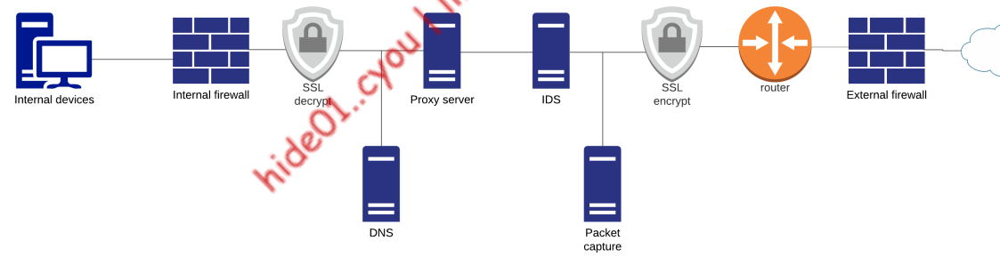

9- Bypassing network filters (theory)

- 1. 1. Edge DNS servers may perform domain filtering, which can deny disallowed domains
- egress traffic (from system to ouside) pass through an internal firewall which filters it based on protocol port , etc (e.g block smb protocol going outside)
- trafic pass through SSL inspection which will decrypt the traffic and reencrypt it if it passes filters
- If the traffic is still allowed, it may next pass through a traffic filter, like a proxy server or an IDS, and the data may be copied to a full packet capture device.
- Next, the traffic may pass through an external firewall that may filter egress traffic (in addition to filtering ingress traffic as expected).
- If the traffic passes these inspection points, it is then routed to the Internet
- since this is complex orgs usulay combine multiple things in one (e.g proxy server that acts like SSL inspection , IDS and domain filtering)
Lab architecture

- • • ubuntu sysrem is an edge defense machine
- From an external perspective, we can SSH to the Ubuntu system from our Kali machine. The Windows 10 machine is behind the Ubuntu machine, which means we can’t access it directly.
- However, a port forwarding rule forwards RDP requests so we can RDP to the Windows client by connecting to the Ubuntu machine on TCP port 3389.